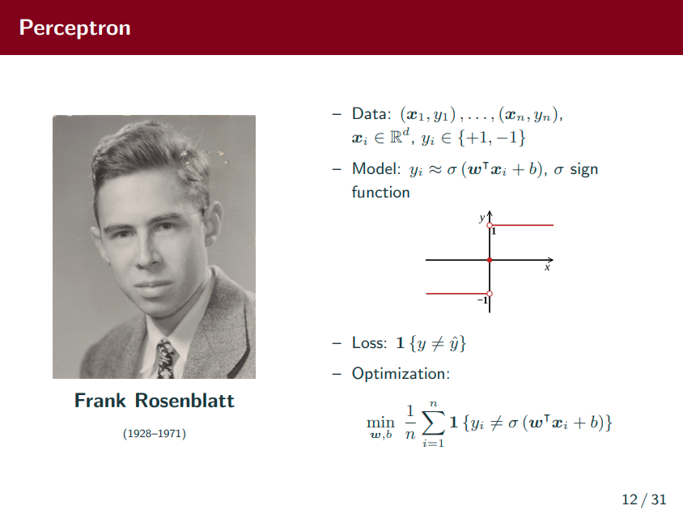

Think DL: old and new neural networks
Acknowledgement: This course is being offered by Prof. Ju Sun at the University of Minnesota in Fall 2020. Pictures of slides are from the course.
Netruel Networks: Old and New
Start from Neurons
Model of biological neurons
Shallow to DNNs
Artificial Neurons

ReLU is the most popular activation function nowadays.

People play diverse forms of NN but only play with graph without cycles, because we cannot do auto differentiation once we have cycles.
Supervised Learning in ML
Supervised Learning in DL

Instead of finding a function from a family of functions, we try to find a group of weights (w) and offsets(b) to minimize the average loss.
Perceptron
Def: Perceptron is a single artificial neuron for binary classification.



They are all (shallow) NNs
- Linear Regression
- Perceptron and Logistic Regression
- Softmax Regression
- Multilayer Perceptron (feedforward NNs)
- Support Vector Machine (SVM)
- PCA (autoencoder)
- Matrix Factorization
Some Background Knowledge
Turing Test
How we measure whether we achieve human-level AI?
Key ingredients of DL

Suprisingly, we’re still using those computational methods that were invented 25-30 years ago. Nowadays the progress of DL largely depends on improvement of hardware (GPUs), but seldom on new computational methods.